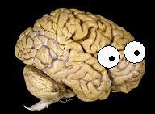

Q&A with Wouter BoekelBy Neuroskeptic & Chris Gorgolewski  At the 2016 OHBM Annual Meeting, a new ‘Replication Award’ was announced that aimed to promote and reward reproducibility in neuroimaging research, and to open science more generally. Here, we hear from Neuroskeptic, a prominent blogger and advocate of open science, as to why replication studies are pivotal in improving the quality of our science. We then learn from this year’s recipient of the OHBM Replication Award, Wouter Boekel, about his winning study. Neuroskeptic: I’m very pleased to have been invited to write a few words on why replication studies are important in science. Congratulations to Wouter Boekel for winning the Award (for a study which I blogged about at the time it was published). In my view, replicability is the essence of scientific truth. To say that a certain scientific result is true or valid, is nothing other than to say that someone, who correctly carries out the same methods, would be able to confirm it for themselves. Without the assumption of replicability, scientific papers would become merely historical documents – ‘we did so and so, and we observed so and so, but your mileage may vary. While most (although, I should acknowledge, not all) researchers accept the importance of replicability in principle, it is still common to hear it said that actually doing a replication study is unworthy of a good scientist. Sure, replications are all very well, but they’re not very exciting. Even some journal editors have been known to express this view, refusing to consider any replication studies for publication in their journals (although I think this is becoming less common). The problem is that replications lack novelty, which is, at least for many people, the hallmark of science at the highest level (or at least, the highest impact factor). I think that this cult of novelty is unfortunate. While novelty can be a virtue in a scientific work, this is only true if the result is valid. A novel, but false, claim is unlikely to advance science, while a failure to replicate such a claim does. Successful replications, too, are a contribution to science. It could be said that they ‘merely confirm what we already knew’, but in fact we can’t assume that a given claim will be confirmed, until it is. To build a road through the wilderness, we do need pioneers to map out a new path, but we also need people to check the path is sound.
From today’s perspective, it is relatively simple to acquire questionnaire data or a computerized task in combination with a T1- or diffusion-weighted structural scan. So most of the early data on brain-behavior relationships came from these kind of studies. At the time there were also increasing concerns coming from experimental psychology about problems with replicability and reliability of research findings. An increasing number of publications started to warn of file-drawer effects, questionable research practices, and sample size. There were also some notable cases of large-scale misuse of statistics and research methodology at the time, which further attracted attention to these concerns. We found ourselves in the middle of a fast increase in the rate of published cognitive neuroscience articles on one side, and increasing concerns about reliability and the absence of replications on the other. This seemed the perfect environment in which to set up a replication study of some of the many structural brain behavior correlations which had been discovered. CG: …and what did you find? WB: We tried to replicate a total of 17 structural brain-behavior correlation effects. Our Bayesian statistical results suggested there was reliable evidence for the absence of 8 of the effects, and none of the effects were reliably present when viewed through a Bayesian lens. We used some other statistics as well, including the p-value, which showed 16 non-replications. CG: Was the definition of replication problematic? WB: Yeah it was – this came back in the review process, and later in the commentaries and online discussions. We defined a ‘failure of replication’ as the inability to find a significant effect or a convincing effect in Bayesian terms. But that also means that we considered an absence of evidence to be a ‘failure of replication’. Maybe some other people would say “That’s a bit more ambiguous, you should reserve the ‘failure of replication’ only if you find convincing evidence that the effect is absent.” So, yeah, there were difficulties with that. CG: So if you rephrased the categories into: definitely replicated, definitely not replicated, no effect, and somewhere in between, what are the numbers then? WB: We found 8 effects where the Bayes factor was higher than 3. That means that the data were more than 3 times as likely to have occurred under the null hypothesis. For us, that number 3 was pretty convincing; in those cases we were satisfied that the effect was definitely not replicated. The other half – 8 effects – were more ambiguous. The Bayes factor for those tests was around 1, and mostly in favour of the absence of the effect, but not so much that we could make the claim that it was definitely absent. So, it was about 50/50. CB: Many of these comments came up after the paper was published. I know that there was a commentary and a rebuttal – bringing up concerns. How did you address them? WB: Indeed, two commentaries (here and here) came out of these discussions and we subsequently wrote a rejoinder as well. There were also discussions online in Neuroskeptic’s blogpost. The issues were mostly about our sample size. We had just 34 subjects, 35 for some effects. That was a bit low compared to some of the original findings - some of the original studies had over 100 subjects. That was raised as an issue in the commentaries. They definitely had a good point and we just tried to reason that this was new at the time, carrying out this sort of replication, so any replication is better than no replication, even if the sample size was modest. Another concern was about the differences in the pipeline that we used. We used FSL for the analysis of our structural data. Some of the original studies used SPM or other software. At the time we were familiar with FSL so we decided to use that. We assumed that volumes of grey matter would be similar using different software. It was demonstrated in the commentaries, that the algorithms used by different imaging software does impact on volume measurements. In future other investigators can look at the differences you get when using different analysis methods. CG: Critically, you preregistered the methods for the study and notified the authors of the original studies beforehand. Were there any complications or challenges in doing this? WB: Preregistration was pretty new back then. I think Cortex was just starting to set up their preregistered reports format and there were some other journals becoming interested in such a format as well. We decided to publish our preregistered methods on a blog. The main difficulty there was in deciding what to preregister, and what not to. There were no standardised guidelines yet so we had to think of our own. Indeed we also notified the authors of the original studies, who were very supportive and some even provided files that made our analyses easier and more comparable to the original study. CG: And to wrap up, what advice would you give to people who are planning or wanting to publish a replication?
WB: I think it’s really nice to involve the authors of the original work – send them your plan for replication and find out whether you should use a different method or just make sure that you’re doing the study correctly. That’s a good tip because it makes it a lot easier if you then find an effect that’s not there – you find a null effect – then it becomes more difficult for the original authors to try to find something by which they can discredit your finding. They agreed to the way you did it – so if you adhere to the preregistration then you should be fine. In addition, if everyone would replicate all of their published experiments at least once, that would already provide the field with a large increase in reliability. With that idea in mind I would advise any researcher who is interested in replication to start by replicating one of their own published studies. This should be easier than replicating someone else's study, simply due to the familiarity with one's own methods. I would also say – try to do it on a larger scale. This was one of our first replications so we only had a small sample size. In future it would be beneficial to have a larger sample, that would be an advantage. CG: Thank you so much and congratulations once again. The call for nominations for the OHBM Replication Award is now open. Deadline is January 12, 2018. For more information about the OHBM Replication Award, review the nomination criteria here and read our Q&A with Chris Gorgolewski. Neuroskeptic is a neuroscientist and a blogger for Discover Magazine.
0 Comments
Your comment will be posted after it is approved.
Leave a Reply. |
BLOG HOME
Archives
August 2023
|
 RSS Feed
RSS Feed